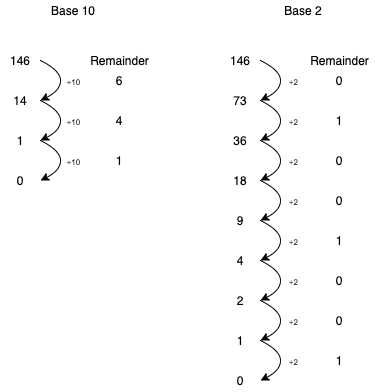

Week 2: Exercises#
Exercise 1: Decimal to/from Binary#
Write a cell that converts a decimal integer to a binary string, using a while loop and not just recasting.
{kind=link}
decimal = 745
binary = ''
print(binary)
Write a cell that converts binary string to a decimal integer, using a for loop and not just recasting. Make sure that you are reading the binary in the right direction… (Hint: you can loop through the characters in a string but remeber to cast to an int to do do calculations but make sure that you are reading the binary in the right direction…)
binary = '10111001'
decimal = 0
print(decimal)
0
Exercise 2: Balmer Lines#
As seen in the last excercise the energy levels of a hydrogen atom are the following $\( E_n = - \frac{e^2}{8 \pi \varepsilon_0 a_0 n^2} \approx \frac{-13.6\text{eV}}{n^2} .\)$
Make an empty list and append the values of the first ten energies using a for-loop.
E_levels = []
print(E_levels)
[]
Now do this with list comprehension.
E_levels =
print(E_levels)
File "/var/folders/9b/hnjyg5ld18v94zj022rv_zzm0000gn/T/ipykernel_2051/3443579649.py", line 1
E_levels =
^
SyntaxError: invalid syntax
Now make a list of the first eight Balmer lines
Balmer =
print(Balmer)
Exercise 3: Quantum Qubit Gates#
It turns out we can contain lists within lists i.e. \([4.0,[1,5]]\). Using nested lists for each row, represent the following single qubit gates X,Y, and Z and print them.
X =
Y =
Z =
print("X = ", X)
print("Y = ", Y)
print("Z = ", Z)
There is also the Hadamard gate. $\( H = \begin{pmatrix} 1/\sqrt{2} & 1/\sqrt{2} \\ 1/\sqrt{2} & -1/\sqrt{2} \end{pmatrix}\)$
H =
print(H)
It is more useful if every element is a complex type so cast all matrices into complex matrices.
print("X = ", X)
print("Y = ", Y)
print("Z = ", Z)
print("H = ", H)
Make a copy of the \(Y\) matrix. Start with a \(2 \times 2\) matrix of all \(0\)s.
Y_copy = [[0,0],[0,0]]
Create a smiliar cell that makes a transpose of \(Y\), \(Y^T\).
Y_trans = [[0,0],[0,0]]
Now take a Hermitian adjoint and check if \(Y\) is Hermitian.
Y_dag = [[0,0],[0,0]]
Now multiply \(X\) and \(H\) to get \(XH\).
XH = [[0,0],[0,0]]
Now multiply \(XH\) and \(H\) to get \(HXH\).
HXH = [[0,0],[0,0]]
print(HXH)
We have verified the well known identity $\(HXH = Z.\)$
Exercise 4: How many days left do you have to live?#
By inputting the current date dd/mm/yyyy and your birthday dd/mm/yyyy. Calculate how many days you have lived.

current_date = input("Enter the current date dd/mm/yyyy: " )
birth_date = input("Enter your birth date dd/mm/yyyy: ")
Lets extract the current day, month and year aswell as the birth day, month and year from these inputs.
current_day =
current_month =
current_year =
birth_day =
birth_month =
birth_year =
When counting the days lived, we need to take into account leap days and days in the months of the year. Lets make two list with the number of days in each month for a regular year, and then a leap year.
Months = [31,28,31,30,31,30,31,31,30,31,30,31]
Leap_Months = [31,29,31,30,31,30,31,31,30,31,30,31]
Calculate whether or not your birth year and the current year are leap years. Assign your answers in boolean form to the variables given below.
current_year_leap = True
birth_year_leap = True
Using the month lists above, calculate how many days you lived in your birth year. Print the answer. This will depend on the boolean value found above.
birth_year_days = 0
print("birth year days = ",birth_year_days)
Using the month lists above, calculate how many days you lived in the current year. Print the answer. This will depend on the boolean value found above.
current_year_days = 0
print("current year days = ",current_year_days)
Now, using a loop, calculate the number of days in the years between your birth year and the current year. Print the answer.
(There are 366 days in a leap year, and 365 in a regular year.)
days_inbetween = 0
print("Days inbetween = ",days_inbetween)
Now sum up your answers to find the total number of days you have lived. Print the answer.
days_lived = birth_year_days + days_inbetween + current_year_days
print("days lived = ",days_lived)
The average person in Ireland lives approximately 82 years. Approximate the number of days you have left to live.
days_left =
print("I have approximately {} days left to live".format(days_left))
Exercise 6: Rotating Vectors In 2-Dimensions#
We can define a vector in two-dimensions with two values “x” and “y”, where the vector points from the origin to the coordinates $\((x,y)\)\( and has magnitude given by \)\( \sqrt{x^2 + y^2} \)$
The vector is written as a 2x1 matrix, as follows:
We can rotate the vector around the origin by multiplying it by a matrix, namely a rotational matrix, given by:
If we want to rotate by an angle \( \theta = \pi/2 \) then we obtain the rotation matrix:
Find the resulting vector after rotating the vector, with \(x=1\) and \(y=1\), by \(\pi/2\). Print the answer.
Vector = [1,1]
Rotation = [[0,-1],[1,0]]
Result = [0,0]
print(Result)
Calculate the magnitude of the initial vector and the resulting vector. Check if they are equal, print a boolean answer.
Exercise 7: Quantum Qubit State Normalisation#
Read in the file “qubits.txt”, each line represents the state of a different qubit in a two-dimesnional basis, so there are two space-seperated integers. For example,
However, these states are not normalised. What is normalisation? In simple mathematical terms, it means the squared-sum of these integers is equal to one. In the above case, this is not true
To normalise, we divide each integer, \(a\) and \(b\), by $\( \sqrt{a^2 + b^2} \)$
So in the above case, we change the space-seperated integers to
Now their squared sum is
and we can say they are normalised.
Read in the file, and line by line, normalise each qubit state, write the result to the file “normalised_qubits.txt” and print the answers on the screen. Round to five decimal places.